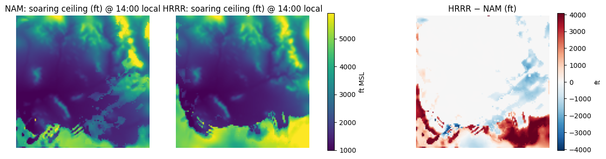
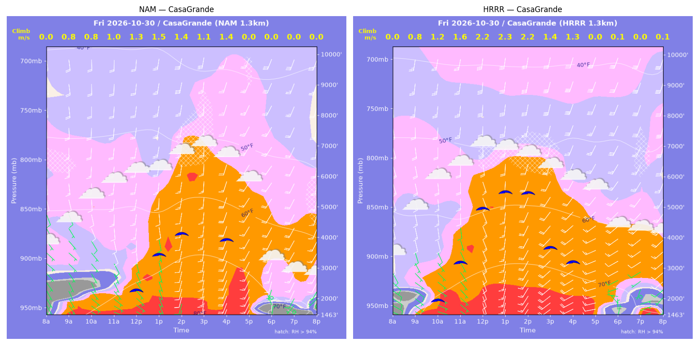
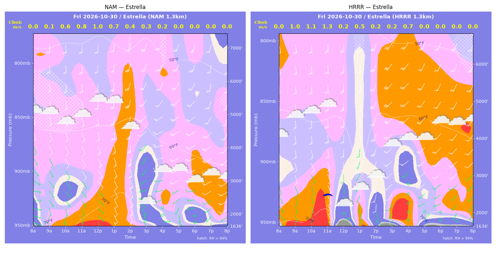
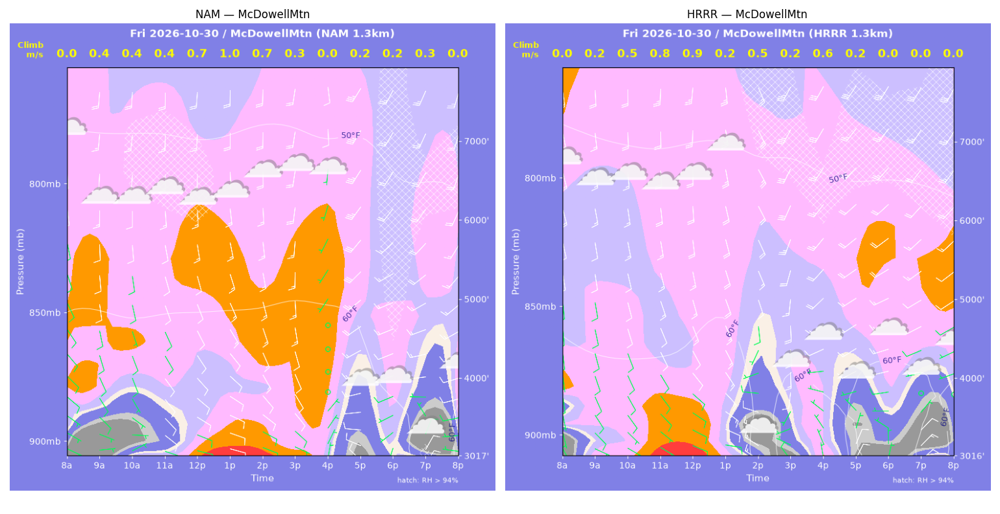
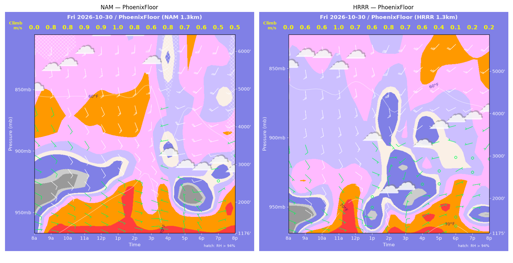
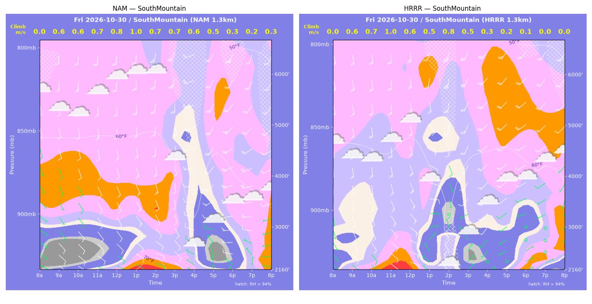
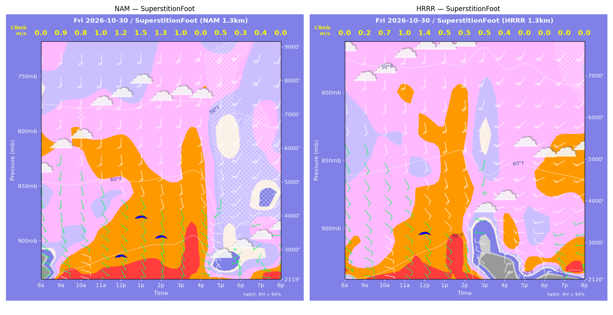
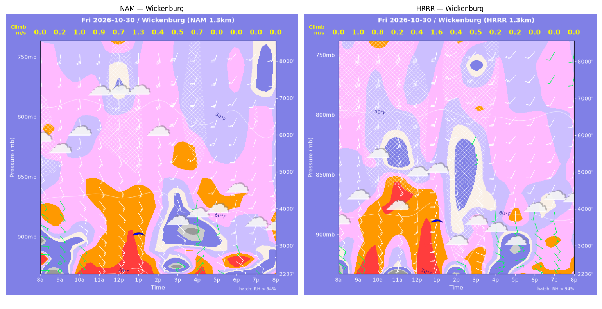

../runs/ab-phoenix-nam — model nam, cycle 2026-10-29 18z, dx 1.3333333740234374 km, 13 hours, grid 114×114../runs/ab-phoenix-hrrr — model hrrr, cycle 2026-10-29 18z, dx 1.3333333740234374 km, 13 hours, grid 114×114Grids identical; afternoon = 12:00–17:59 local (UTC-7). Δ = HRRR − NAM.
| Site | terrain ft | BL top (AGL) med|Δ| / bias (ft) | w* med|Δ| / bias (fpm) | Soaring ceiling med|Δ| / bias (ft) | BL wind speed med|Δ| / bias (kt) | BL wind dir med|Δ| / bias (deg) | 2 m temperature med|Δ| / bias (F) | Sfc LCL (AGL) med|Δ| / bias (ft) | Sensible heat flux med|Δ| / bias (W/m2) |
|---|---|---|---|---|---|---|---|---|---|
| PhoenixFloor | 1176 | 489 / -433 | 43 / -33 | 0 / -0 | 2 / -2 | 122 / +22 | 5 / -4 | 2142 / -1868 | 27 / -8 |
| SouthMountain | 2160 | 237 / -188 | 44 / -42 | 0 / -0 | 7 / -5 | 95 / -88 | 4 / -2 | 1162 / -1108 | 33 / -33 |
| SuperstitionFoot | 2119 | 1728 / -965 | 95 / -70 | 176 / -462 | 4 / +5 | 51 / -14 | 4 / -3 | 1396 / -779 | 52 / -16 |
| Estrella | 1636 | 789 / -359 | 30 / -21 | 1 / +1 | 7 / -3 | 86 / -9 | 5 / -3 | 1524 / -797 | 3 / -6 |
| Wickenburg | 2237 | 598 / -93 | 45 / -8 | 0 / +49 | 7 / +0 | 34 / -8 | 1 / -2 | 1515 / -1436 | 17 / +4 |
| CasaGrande | 1464 | 1146 / +616 | 105 / +91 | 1652 / +1223 | 6 / +5 | 4 / +7 | 2 / +0 | 661 / -61 | 83 / +83 |
| McDowellMtn | 3018 | 424 / -212 | 46 / -10 | 1 / -1 | 2 / -1 | 99 / +45 | 4 / -4 | 1297 / -1141 | 11 / -3 |
| Metric | n | median |Δ| | p90 |Δ| | bias |
|---|---|---|---|---|
| BL top (AGL) (ft) | 42 | 598 | 1769 | -233 |
| w* (fpm) | 42 | 48 | 155 | -13 |
| Soaring ceiling (ft) | 42 | 1 | 1308 | +116 |
| BL wind speed (kt) | 42 | 4 | 10 | -0 |
| BL wind dir (deg) | 42 | 52 | 147 | -6 |
| 2 m temperature (F) | 42 | 2 | 9 | -3 |
| Sfc LCL (AGL) (ft) | 42 | 897 | 3345 | -1027 |
| Sensible heat flux (W/m2) | 42 | 26 | 82 | +3 |
diffmap_tol.png| local | BL top NAM/HRRR ft | w* NAM/HRRR fpm | ceiling NAM/HRRR ft | BL wind NAM/HRRR | T2 NAM/HRRR F | HFX NAM/HRRR |
|---|---|---|---|---|---|---|
| 08:00 | 0 / 0 | 0 / 0 | 1176 / 1176 | 3kt@080 / 5kt@104 | 67 / 65 | 0 / 0 |
| 09:00 | 905 / 477 | 157 / 122 | 1176 / 1176 | 9kt@126 / 10kt@125 | 71 / 70 | 66 / 59 |
| 10:00 | 1179 / 541 | 161 / 114 | 1176 / 1176 | 10kt@127 / 7kt@139 | 72 / 71 | 55 / 42 |
| 11:00 | 1263 / 1494 | 182 / 190 | 1176 / 1176 | 9kt@139 / 9kt@147 | 74 / 74 | 75 / 72 |
| 12:00 | 1292 / 1485 | 186 / 139 | 1176 / 1176 | 8kt@139 / 11kt@122 | 75 / 75 | 78 / 28 |
| 13:00 | 1517 / 386 | 193 / 120 | 1176 / 1176 | 8kt@124 / 5kt@271 | 77 / 70 | 74 / 69 |
| 14:00 | 1641 / 928 | 156 / 156 | 1176 / 1176 | 11kt@127 / 9kt@344 | 78 / 68 | 36 / 63 |
| 15:00 | 944 / 679 | 118 / 134 | 1176 / 1176 | 9kt@112 / 7kt@013 | 77 / 68 | 27 / 55 |
| 16:00 | 1502 / 776 | 161 / 123 | 1176 / 1176 | 5kt@289 / 2kt@082 | 70 / 71 | 43 / 37 |
| 17:00 | 898 / 940 | 144 / 88 | 1176 / 1176 | 7kt@345 / 4kt@076 | 70 / 72 | 51 / 11 |
| 18:00 | 746 / 348 | 109 / 18 | 1176 / 1176 | 5kt@296 / 2kt@082 | 69 / 72 | 27 / 0 |
| 19:00 | 897 / 273 | 90 / 37 | 1176 / 1176 | 5kt@070 / 4kt@119 | 70 / 71 | 12 / 3 |
| 20:00 | 1449 / 301 | 103 / 46 | 1176 / 1176 | 7kt@111 / 7kt@094 | 70 / 70 | 12 / 5 |
| local | BL top NAM/HRRR ft | w* NAM/HRRR fpm | ceiling NAM/HRRR ft | BL wind NAM/HRRR | T2 NAM/HRRR F | HFX NAM/HRRR |
|---|---|---|---|---|---|---|
| 08:00 | 0 / 0 | 0 / 0 | 2160 / 2160 | 5kt@112 / 5kt@133 | 67 / 67 | 0 / 0 |
| 09:00 | 285 / 486 | 116 / 127 | 2160 / 2160 | 11kt@137 / 11kt@148 | 68 / 68 | 85 / 65 |
| 10:00 | 306 / 549 | 114 / 128 | 2160 / 2160 | 12kt@136 / 11kt@150 | 68 / 68 | 74 / 59 |
| 11:00 | 407 / 1115 | 135 / 191 | 2160 / 2160 | 11kt@139 / 13kt@149 | 69 / 70 | 93 / 96 |
| 12:00 | 510 / 734 | 149 / 119 | 2160 / 2160 | 10kt@142 / 15kt@128 | 70 / 70 | 100 / 36 |
| 13:00 | 935 / 409 | 192 / 107 | 2160 / 2160 | 13kt@138 / 4kt@023 | 72 / 67 | 118 / 47 |
| 14:00 | 715 / 676 | 136 / 148 | 2160 / 2160 | 12kt@141 / 10kt@336 | 73 / 63 | 54 / 74 |
| 15:00 | 694 / 268 | 136 / 91 | 2160 / 2160 | 10kt@139 / 5kt@024 | 70 / 65 | 56 / 43 |
| 16:00 | 505 / 255 | 110 / 66 | 2160 / 2160 | 11kt@280 / 2kt@233 | 64 / 67 | 40 / 17 |
| 17:00 | 336 / 224 | 101 / 37 | 2160 / 2160 | 9kt@324 / 1kt@249 | 65 / 68 | 47 / 3 |
| 18:00 | 250 / 111 | 66 / 16 | 2160 / 2160 | 7kt@292 / 5kt@060 | 66 / 67 | 17 / 0 |
| 19:00 | 237 / 262 | 47 / 0 | 2160 / 2160 | 3kt@327 / 4kt@071 | 66 / 67 | 7 / -3 |
| 20:00 | 1325 / 278 | 67 / 0 | 2160 / 2160 | 9kt@249 / 3kt@109 | 67 / 67 | 3 / -3 |
| local | BL top NAM/HRRR ft | w* NAM/HRRR fpm | ceiling NAM/HRRR ft | BL wind NAM/HRRR | T2 NAM/HRRR F | HFX NAM/HRRR |
|---|---|---|---|---|---|---|
| 08:00 | 0 / 0 | 0 / 0 | 2119 / 2120 | 6kt@076 / 7kt@099 | 63 / 70 | 0 / 0 |
| 09:00 | 1076 / 413 | 170 / 39 | 2119 / 2120 | 7kt@136 / 9kt@112 | 73 / 71 | 70 / 2 |
| 10:00 | 1271 / 1157 | 151 / 140 | 2119 / 2120 | 7kt@134 / 10kt@127 | 73 / 73 | 42 / 36 |
| 11:00 | 1844 / 1813 | 203 / 197 | 2119 / 2120 | 8kt@142 / 9kt@126 | 75 / 74 | 70 / 65 |
| 12:00 | 2545 / 2479 | 237 / 271 | 2870 / 3221 | 8kt@138 / 11kt@152 | 76 / 76 | 81 / 125 |
| 13:00 | 3598 / 1819 | 302 / 102 | 3976 / 2120 | 14kt@175 / 11kt@141 | 77 / 76 | 119 / 8 |
| 14:00 | 3425 / 1325 | 251 / 102 | 3392 / 2120 | 12kt@174 / 13kt@150 | 77 / 76 | 72 / 12 |
| 15:00 | 2917 / 376 | 188 / 95 | 2119 / 2120 | 12kt@172 / 18kt@304 | 77 / 65 | 35 / 34 |
| 16:00 | 1115 / 135 | 0 / 86 | 2119 / 2120 | 5kt@120 / 18kt@016 | 75 / 68 | -1 / 69 |
| 17:00 | 486 / 2163 | 98 / 0 | 2119 / 2120 | 17kt@310 / 25kt@242 | 65 / 71 | 29 / -8 |
| 18:00 | 287 / 502 | 57 / 0 | 2119 / 2120 | 3kt@314 / 10kt@296 | 66 / 68 | 10 / -22 |
| 19:00 | 547 / 217 | 71 / 0 | 2119 / 2120 | 4kt@165 / 5kt@318 | 67 / 69 | 10 / -7 |
| 20:00 | 524 / 84 | 0 / 0 | 2119 / 2120 | 1kt@136 / 4kt@007 | 67 / 69 | -0 / -2 |
| local | BL top NAM/HRRR ft | w* NAM/HRRR fpm | ceiling NAM/HRRR ft | BL wind NAM/HRRR | T2 NAM/HRRR F | HFX NAM/HRRR |
|---|---|---|---|---|---|---|
| 08:00 | 0 / 0 | 0 / 0 | 1636 / 1637 | 5kt@114 / 6kt@139 | 66 / 70 | 0 / 0 |
| 09:00 | 123 / 1467 | 22 / 190 | 1636 / 1637 | 3kt@186 / 10kt@164 | 71 / 73 | 1 / 72 |
| 10:00 | 790 / 1704 | 124 / 208 | 1636 / 1637 | 5kt@140 / 11kt@163 | 71 / 73 | 37 / 82 |
| 11:00 | 1120 / 2035 | 160 / 266 | 1636 / 2504 | 7kt@137 / 16kt@173 | 73 / 75 | 56 / 143 |
| 12:00 | 1567 / 91 | 187 / 35 | 1636 / 1637 | 12kt@146 / 3kt@190 | 75 / 66 | 65 / 7 |
| 13:00 | 2144 / 922 | 135 / 103 | 1636 / 1637 | 15kt@166 / 4kt@184 | 76 / 67 | 17 / 17 |
| 14:00 | 482 / 117 | 74 / 46 | 1636 / 1637 | 13kt@167 / 6kt@150 | 74 / 68 | 12 / 11 |
| 15:00 | 310 / 104 | 68 / 44 | 1636 / 1637 | 5kt@317 / 7kt@190 | 67 / 70 | 15 / 11 |
| 16:00 | 91 / 1304 | 30 / 139 | 1636 / 1637 | 2kt@077 / 10kt@241 | 69 / 72 | 4 / 30 |
| 17:00 | 216 / 118 | 0 / 0 | 1636 / 1637 | 3kt@163 / 2kt@028 | 69 / 71 | -1 / -1 |
| 18:00 | 84 / 84 | 0 / 0 | 1636 / 1637 | 1kt@234 / 4kt@066 | 67 / 69 | -0 / -1 |
| 19:00 | 2186 / 84 | 0 / 0 | 1636 / 1637 | 18kt@236 / 4kt@106 | 66 / 68 | -2 / -1 |
| 20:00 | 1675 / 84 | 0 / 0 | 1636 / 1637 | 16kt@229 / 3kt@145 | 64 / 69 | -2 / -1 |
| local | BL top NAM/HRRR ft | w* NAM/HRRR fpm | ceiling NAM/HRRR ft | BL wind NAM/HRRR | T2 NAM/HRRR F | HFX NAM/HRRR |
|---|---|---|---|---|---|---|
| 08:00 | 0 / 0 | 0 / 0 | 2237 / 2237 | 5kt@087 / 2kt@160 | 64 / 64 | 0 / 0 |
| 09:00 | 89 / 1566 | 31 / 196 | 2237 / 2237 | 1kt@176 / 14kt@155 | 66 / 69 | 4 / 74 |
| 10:00 | 1091 / 2236 | 192 / 150 | 2237 / 2237 | 11kt@122 / 19kt@171 | 70 / 70 | 96 / 23 |
| 11:00 | 1485 / 99 | 182 / 39 | 2237 / 2237 | 14kt@127 / 11kt@189 | 72 / 65 | 60 / 9 |
| 12:00 | 1845 / 2469 | 131 / 74 | 2237 / 2237 | 15kt@138 / 18kt@174 | 71 / 69 | 17 / 1 |
| 13:00 | 2830 / 2713 | 258 / 308 | 3373 / 3667 | 18kt@166 / 25kt@198 | 73 / 72 | 91 / 162 |
| 14:00 | 492 / 241 | 74 / 72 | 2237 / 2237 | 15kt@131 / 4kt@148 | 69 / 61 | 10 / 22 |
| 15:00 | 402 / 974 | 96 / 102 | 2237 / 2237 | 6kt@117 / 17kt@113 | 63 / 65 | 32 / 14 |
| 16:00 | 960 / 205 | 132 / 43 | 2237 / 2237 | 4kt@152 / 5kt@095 | 65 / 65 | 34 / 5 |
| 17:00 | 887 / 258 | 0 / 41 | 2237 / 2237 | 11kt@137 / 3kt@067 | 65 / 64 | -3 / 3 |
| 18:00 | 874 / 336 | 0 / 0 | 2237 / 2237 | 9kt@161 / 3kt@128 | 66 / 65 | -10 / -1 |
| 19:00 | 749 / 262 | 0 / 0 | 2237 / 2237 | 11kt@173 / 5kt@154 | 63 / 65 | -6 / -2 |
| 20:00 | 1061 / 873 | 0 / 0 | 2237 / 2237 | 14kt@173 / 7kt@135 | 64 / 64 | -5 / -4 |
| local | BL top NAM/HRRR ft | w* NAM/HRRR fpm | ceiling NAM/HRRR ft | BL wind NAM/HRRR | T2 NAM/HRRR F | HFX NAM/HRRR |
|---|---|---|---|---|---|---|
| 08:00 | 0 / 0 | 0 / 0 | 1464 / 1464 | 4kt@134 / 4kt@106 | 64 / 63 | 0 / 0 |
| 09:00 | 768 / 639 | 161 / 152 | 1464 / 1464 | 6kt@156 / 7kt@129 | 70 / 71 | 84 / 85 |
| 10:00 | 979 / 1829 | 152 / 234 | 1464 / 1970 | 6kt@156 / 6kt@143 | 72 / 75 | 55 / 110 |
| 11:00 | 1176 / 3136 | 195 / 322 | 1464 / 3193 | 6kt@155 / 12kt@179 | 75 / 78 | 98 / 168 |
| 12:00 | 2155 / 5177 | 255 / 433 | 2302 / 4908 | 9kt@175 / 21kt@170 | 77 / 80 | 120 / 247 |
| 13:00 | 3859 / 5831 | 299 / 454 | 3432 / 5425 | 15kt@182 / 23kt@184 | 79 / 82 | 108 / 254 |
| 14:00 | 5693 / 5867 | 278 / 441 | 4090 / 5402 | 16kt@189 / 21kt@192 | 81 / 82 | 59 / 232 |
| 15:00 | 5600 / 4724 | 220 / 275 | 1464 / 3616 | 19kt@181 / 19kt@200 | 82 / 80 | 30 / 70 |
| 16:00 | 5357 / 3940 | 273 / 265 | 3865 / 3138 | 22kt@198 / 18kt@217 | 81 / 79 | 60 / 74 |
| 17:00 | 3219 / 4037 | 0 / 0 | 1464 / 1464 | 15kt@213 / 22kt@215 | 78 / 76 | -2 / -5 |
| 18:00 | 278 / 87 | 0 / 16 | 1464 / 1464 | 4kt@340 / 6kt@012 | 70 / 73 | -2 / 1 |
| 19:00 | 84 / 469 | 0 / 0 | 1464 / 1464 | 3kt@024 / 5kt@071 | 68 / 71 | -0 / -1 |
| 20:00 | 271 / 127 | 0 / 25 | 1464 / 1464 | 5kt@018 / 3kt@120 | 68 / 71 | -1 / 2 |
| local | BL top NAM/HRRR ft | w* NAM/HRRR fpm | ceiling NAM/HRRR ft | BL wind NAM/HRRR | T2 NAM/HRRR F | HFX NAM/HRRR |
|---|---|---|---|---|---|---|
| 08:00 | 0 / 0 | 0 / 0 | 3018 / 3017 | 6kt@110 / 2kt@121 | 64 / 62 | 0 / 0 |
| 09:00 | 214 / 266 | 80 / 45 | 3018 / 3017 | 5kt@081 / 5kt@117 | 65 / 66 | 33 / 5 |
| 10:00 | 270 / 494 | 73 / 90 | 3018 / 3017 | 5kt@091 / 8kt@145 | 65 / 66 | 20 / 22 |
| 11:00 | 319 / 1403 | 78 / 162 | 3018 / 3017 | 8kt@129 / 11kt@153 | 66 / 67 | 20 / 46 |
| 12:00 | 695 / 1224 | 132 / 170 | 3018 / 3017 | 10kt@129 / 12kt@150 | 68 / 68 | 48 / 61 |
| 13:00 | 1274 / 234 | 196 / 38 | 3018 / 3017 | 12kt@139 / 7kt@101 | 70 / 67 | 86 / 3 |
| 14:00 | 1057 / 268 | 147 / 94 | 3018 / 3017 | 13kt@150 / 17kt@293 | 70 / 60 | 43 / 45 |
| 15:00 | 377 / 92 | 50 / 43 | 3018 / 3017 | 8kt@135 / 6kt@296 | 70 / 63 | 3 / 12 |
| 16:00 | 422 / 742 | 0 / 124 | 3018 / 3017 | 5kt@038 / 4kt@291 | 69 / 64 | -3 / 38 |
| 17:00 | 103 / 96 | 44 / 40 | 3018 / 3017 | 12kt@290 / 11kt@021 | 63 / 60 | 10 / 9 |
| 18:00 | 108 / 114 | 37 / 0 | 3018 / 3017 | 5kt@131 / 4kt@014 | 63 / 60 | 5 / -4 |
| 19:00 | 235 / 447 | 69 / 0 | 3018 / 3017 | 11kt@020 / 10kt@047 | 59 / 60 | 19 / -3 |
| 20:00 | 105 / 354 | 0 / 0 | 3018 / 3017 | 2kt@264 / 6kt@077 | 62 / 62 | -0 / -4 |
montage_PhoenixFloor.pngmontage_SouthMountain.pngmontage_SuperstitionFoot.pngmontage_Estrella.pngmontage_Wickenburg.pngmontage_CasaGrande.pngmontage_McDowellMtn.png